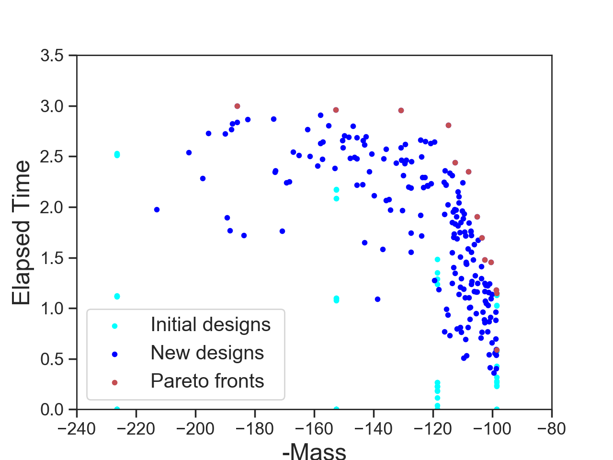
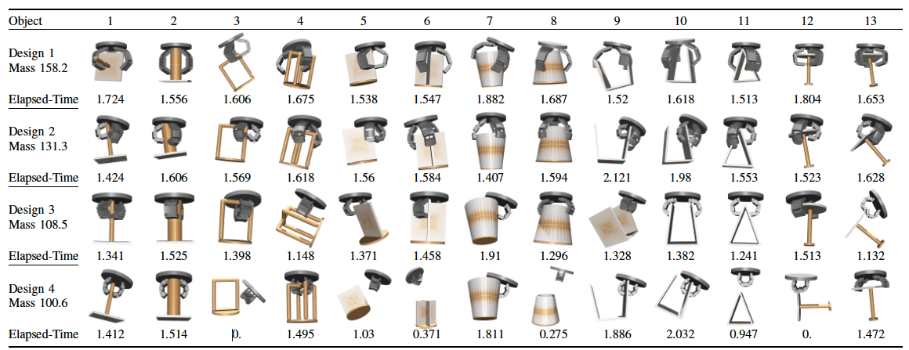
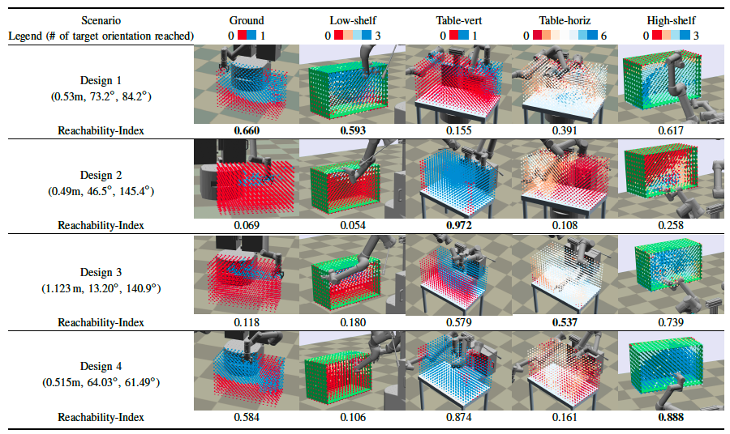

Robot design is a time-consuming process involving repeated experiments in a variety of environments to optimize multiple, possibly conflicting performance metrics. Moreover, the optimal robot performance for a given design depends on how the robot adapts its behavior to its environment. We propose a multi-objective Bilevel Bayesian optimization (MO-BBO) technique to automate the process of form-behavior co-design. The approach expands the Pareto front of multiple metrics by simultaneously exploring the robot design and behavior. MO-BBO uses a bilevel optimization of the acquisition function with design and behavior parameters being the high- and low-level decision variables, respectively. In the low-level, we always choose environment-aware behaviors that maximize each metric. We evaluate MO-BBO in applications to grasping gripper design and bimanual arm placement, and show that our method can efficiently focus samples on the Pareto front and generate a diversity of designs.

We evaluate MO-BBO by applying to (i) gripper design and (ii) bimanual arm placement. (i) In the gripper design problem, we use mass metric and the time elapsed until the gripper drops an object during lifting and shaking as performance metrics. And our object set consists of 13 objects with varying shapes and difficulty of grasping. (ii) In the bimanual arm placement problem, we use reachability metrics and measure that in 5 scenarios {Ground, Low-shelf, High-shelf, Table-Horizontal, Table-Vertical}.

